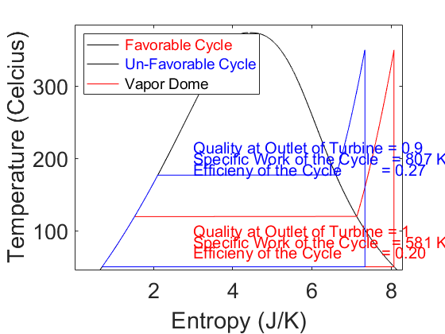
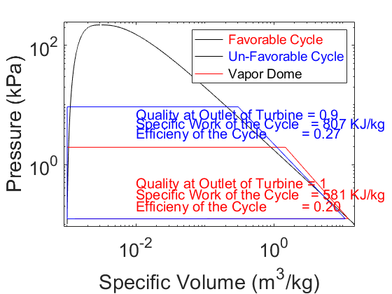

clear all
close all
R=0.287;
PR = 20;
PR2 = 113;
Q_SL = 0;
Q_SV = 1;
P_SL_SV = linspace(.00001,1000,10000);
S_SL = zeros(length(P_SL_SV),1);
T_SL = zeros(length(P_SL_SV),1);
V_SL = zeros(length(P_SL_SV),1);
H_SL = zeros(length(P_SL_SV),1);
S_SV = zeros(length(P_SL_SV),1);
T_SV = zeros(length(P_SL_SV),1);
V_SV = zeros(length(P_SL_SV),1);
H_SV = zeros(length(P_SL_SV),1);
for index=1:10000
H_SL(index) = XSteam('hL_P',P_SL_SV(index));
S_SL(index) = XSteam('sL_P',P_SL_SV(index));
T_SL(index) = XSteam('T_hs',H_SL(index),S_SL(index));
V_SL(index) = XSteam('vL_P',P_SL_SV(index));
H_SV(index) = XSteam('hV_p',P_SL_SV(index));
S_SV(index) = XSteam('sV_p',P_SL_SV(index));
T_SV(index) = XSteam('T_hs',H_SV(index),S_SV(index));
V_SV(index) = XSteam('vV_p',P_SL_SV(index));
end
tempdome = [T_SL,T_SV];
entrdome = [S_SL,S_SV];
voludome = [V_SL,V_SV];
presdome = [P_SL_SV];
T1 = 50;
x = 0;
s1 = XSteam('sL_T',T1);
h1 = XSteam('hL_T',T1);
v1 = XSteam('vL_T',T1);
P1 = XSteam('p_hs',h1,s1);
T4 = T1;
x4 = 1;
h4 = XSteam('hV_T',T4);
s4 = XSteam('sV_T',T4);
v4 = XSteam('vV_T',T4);
P4 = XSteam('P_hs',h4,s4);
T4u = T1;
xu4 = .9;
P4u = P1;
h4u = XSteam('h_Tx',T4u,xu4);
s4u = XSteam('s_ph',P4u,h4u);
v4u = XSteam('v_ph',P4u,h4u);
P2 = 1.95;
s2 = s1;
h2 = XSteam('h_ps',P2,s2);
v2 = XSteam('v_ps',P2,s2);
T2 = XSteam('T_ps',P2,s2);
P2u = 9.3;
s2u = s1;
h2u = XSteam('h_ps',P2u,s2u);
v2u = XSteam('v_ps',P2u,s2u);
T2u = XSteam('T_ps',P2u,s2u);
s3 = s4;
P3 = P2;
T3 = 350;
h3 = XSteam('h_ps',P3,s3);
v3 = XSteam('v_ps',P3,s3);
s3u = s4u;
P3u = P2u;
T3u = 350;
h3u = XSteam('h_ps',P3u,s3u);
v3u = XSteam('v_ps',P3u,s3u);
T_Boiler = linspace(T2,T3,1000);
T_Boileru = linspace(T2u,T3u,1000);
P_Boiler = P2;
P_Boileru = P2u;
s_Boiler = zeros(1000);
v_Boiler = zeros(1000);
s_Boileru = zeros(1000);
v_Boileru = zeros(1000);
for index = 1:1000
s_Boiler(index) = XSteam('s_pT',P_Boiler,T_Boiler(index));
v_Boiler(index) = XSteam('v_pT',P_Boiler,T_Boiler(index));
s_Boileru(index) = XSteam('s_pT',P_Boileru,T_Boileru(index));
v_Boileru(index) = XSteam('v_pT',P_Boileru,T_Boileru(index));
end
tempspump = [T1,T2];
entropypump = [s1,s2];
tempsturb = [T3,T4];
entropyturb = [s3,s4];
tempscond = [T4,T1];
entropycond = [s4,s1];
tempspumpbad = [T1,T2u];
entropypumpbad = [s1,s2u];
tempsturbbad = [T3u,T4u];
entropyturbbad = [s3u,s4u];
tempscondbad = [T4u,T1];
entropycondbad = [s4u,s1];
volspump = [v1,v2];
prespump = [P1,P2];
volsturb = [v3,v4];
presturb = [P3,P4];
volscond = [v4,v1];
prescond = [P4,P1];
volspumpbad = [v1,v2u];
prespumpbad = [P1,P2u];
volsturbbad = [v3u,v4u];
presturbbad = [P3u,P4u];
volscondbad = [v4u,v1];
prescondbad = [P4u,P1];
P_Boiler = zeros(1000,1);
P_Boiler(1:1000) = P2;
P_Boileru = zeros(1000,1);
P_Boileru(1:1000) = P2u;
Quality_Good = 1;
q_h_good = h3-h2;
q_l_good = h4-h1;
eff_good = (q_h_good - q_l_good) / q_h_good;
w_good = q_h_good - q_l_good;
Quality_Bad = .9;
q_h_bad = h3u-h2u;
q_l_bad = h4u-h1;
eff_bad = (q_h_bad - q_l_bad) / q_h_bad;
w_bad = q_h_bad - q_l_bad;
figure(1)
plot(entrdome,tempdome,'k')
hold on
plot(entropypump,tempspump,'r',s_Boiler,T_Boiler,'r',entropyturb,tempsturb,'r',entropycond,tempscond,'r')
plot(entropypumpbad,tempspumpbad,'b',s_Boileru,T_Boileru,'b',entropyturbbad,tempsturbbad,'b',entropycondbad,tempscondbad,'b')
xlabel('Entropy (J/K)','FontSize',22)
set(gca,'fontsize',20)
ylabel('Temperature (Celcius)','FontSize',22)
set(gca,'fontsize',20)
text(3,215,'Quality at Outlet of Turbine = 0.9','Color','b','FontSize',15)
text(3,200,'Specific Work of the Cycle = 807 KJ/kg','Color','b','FontSize',15)
text(3,185,'Efficieny of the Cycle = 0.27','Color','b','FontSize',15)
text(3,100,'Quality at Outlet of Turbine = 1','Color','r','FontSize',15)
text(3,85,'Specific Work of the Cycle = 581 KJ/kg','Color','r','FontSize',15)
text(3,70, 'Efficieny of the Cycle = 0.20','Color','r','FontSize',15)
xlim([.01 8.3])
ylim([45 385])
lgd = legend('\color{red} Favorable Cycle','\color{blue} Un-Favorable Cycle','\color{black} Vapor Dome','Location','northwest');
lgd.FontSize = 14;
hold off
figure(2)
loglog(voludome,presdome,'k')
hold on
loglog(volspump,prespump,'r',v_Boiler,P_Boiler,'r',volsturb,presturb,'r',volscond,prescond,'r')
loglog(volspumpbad,prespumpbad,'b',v_Boileru,P_Boileru,'b',volsturbbad,presturbbad,'b',volscondbad,prescondbad,'b')
xlabel('Specific Volume (m^3/kg)','FontSize',22)
set(gca,'fontsize',20)
ylabel('Pressure (kPa)','FontSize',22)
set(gca,'fontsize',20)
text(.01,7,'Quality at Outlet of Turbine = 0.9','Color','b','FontSize',15)
text(.01,5,'Specific Work of the Cycle = 807 KJ/kg','Color','b','FontSize',15)
text(.01,3.4,'Efficieny of the Cycle = 0.27','Color','b','FontSize',15)
text(.01,.5,'Quality at Outlet of Turbine = 1','Color','r','FontSize',15)
text(.01,.32,'Specific Work of the Cycle = 581 KJ/kg','Color','r','FontSize',15)
text(.01,.20, 'Efficieny of the Cycle = 0.20','Color','r','FontSize',15)
xlim([.0009 15])
ylim([0.09 250])
lgd = legend('\color{red} Favorable Cycle','\color{blue} Un-Favorable Cycle','\color{black} Vapor Dome');
lgd.FontSize = 14;
hold off
 